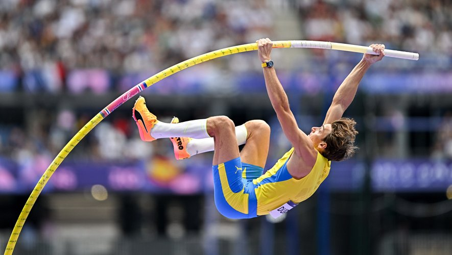

Ma première passion, le code.

Ainsi que la deuxième, le saut à la perche.
Projects
BlaBlaBla — mes projets à découvrir ici !
Ma première passion, le code.

Ainsi que la deuxième, le saut à la perche.
BlaBlaBla — mes projets à découvrir ici !